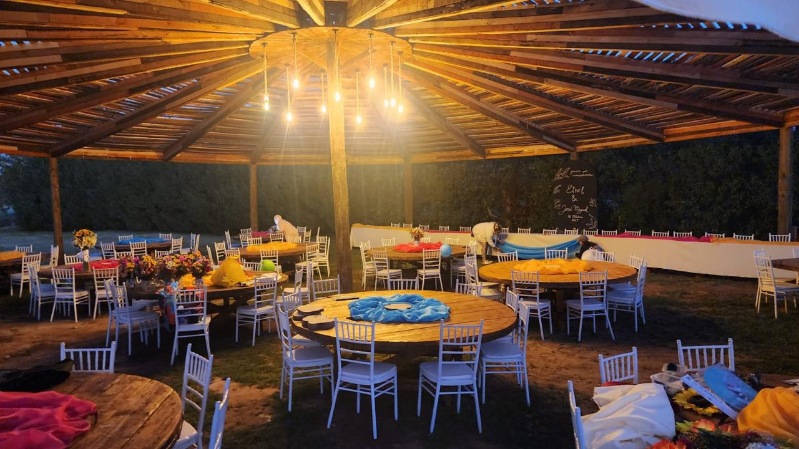
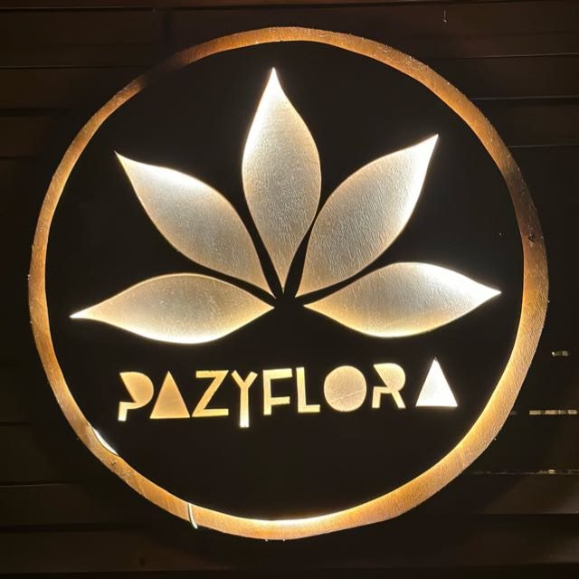
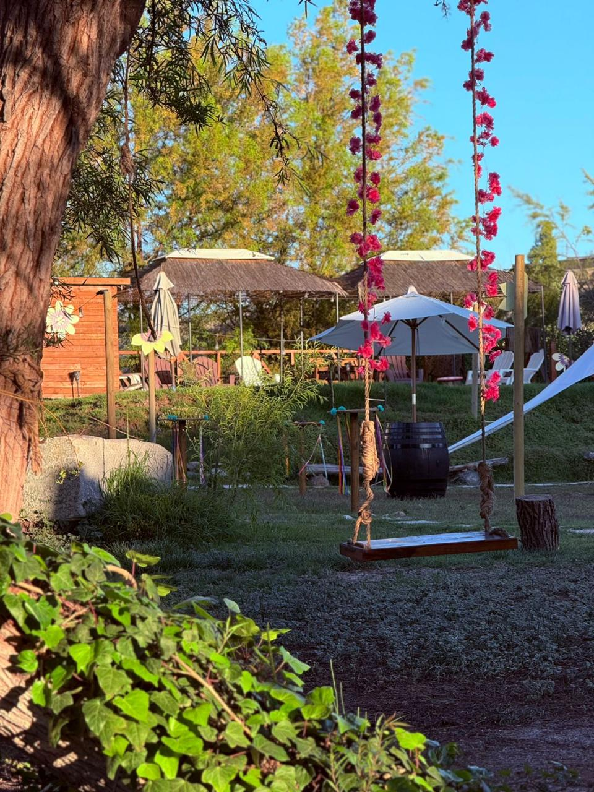
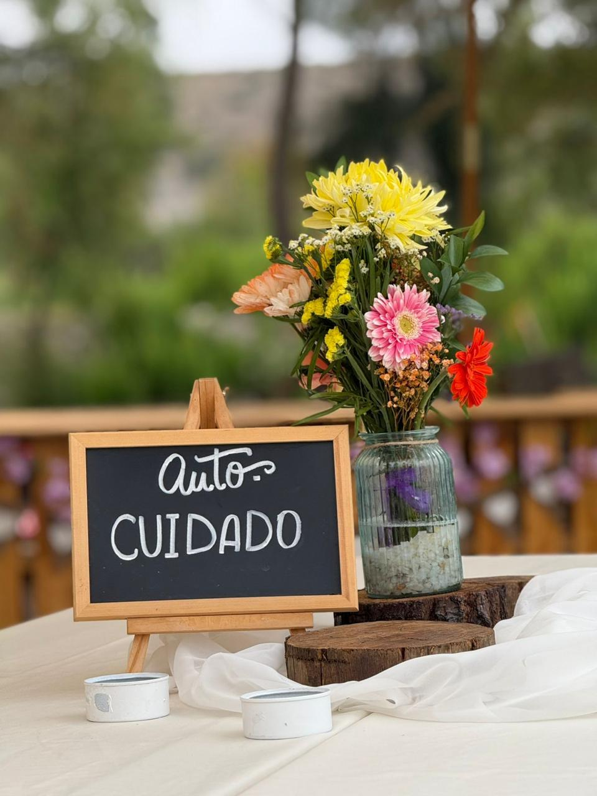
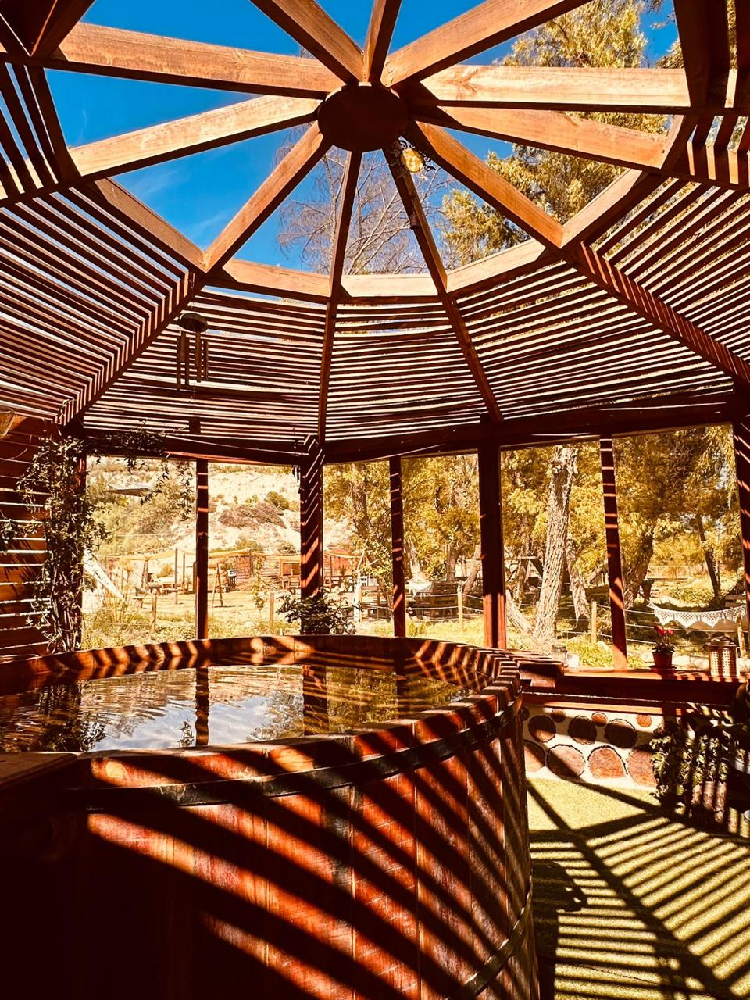
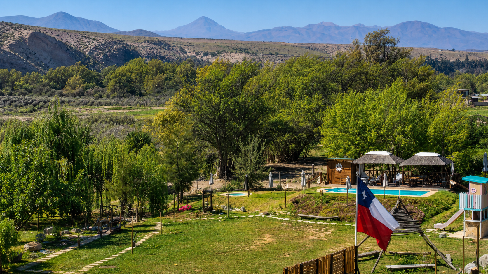
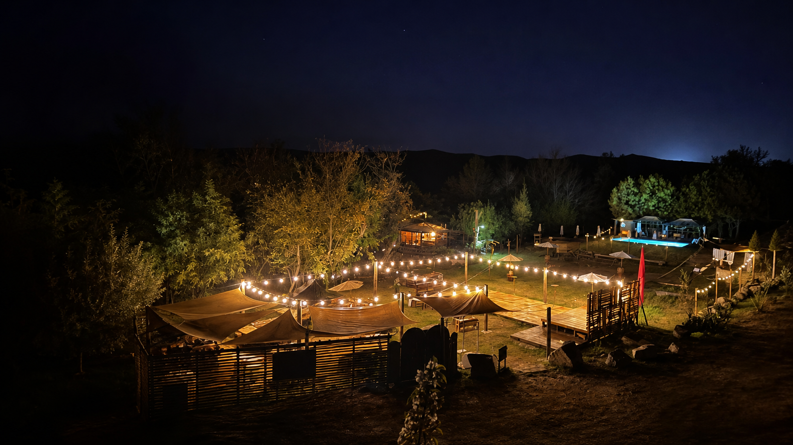
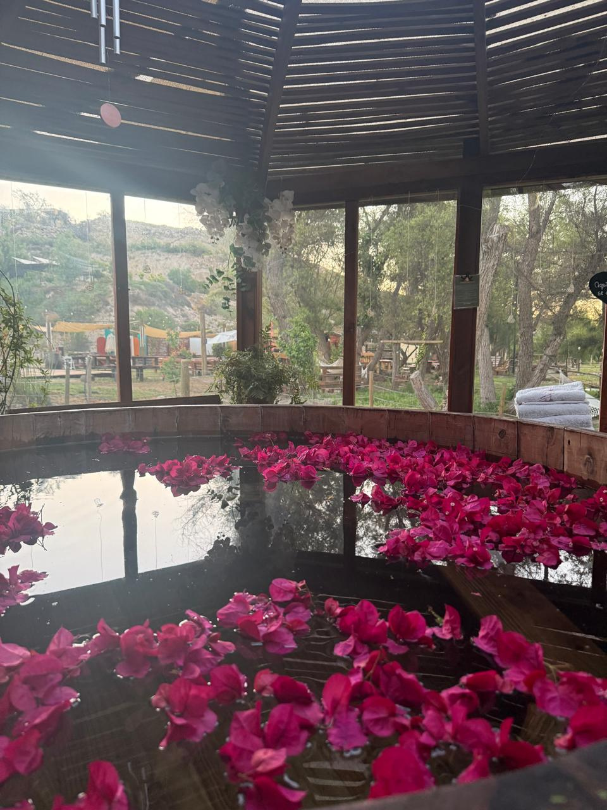
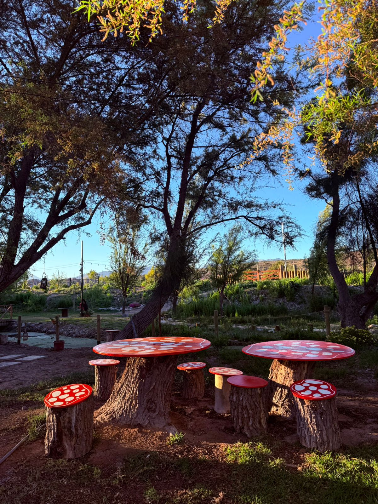

Celebrar
Eventos con encanto
Cumpleaños, encuentros, fiestas temáticas y momentos que merecen un escenario especial.

Paz y FloraCentro de eventos · Vallenar, Atacama
Un rincón entre árboles, agua y cielo abierto para celebrar lo importante y volver a conectar.

Un refugio en el valle

Paz y Flora es un espacio creado para salir de la rutina y disfrutar sin apuro.
De día, el agua y los jardines invitan a descansar. Al caer el sol, las luces del quincho transforman el lugar en un escenario íntimo para cumpleaños, encuentros, celebraciones y experiencias de bienestar.
Tu día, a tu manera
Desde una celebración llena de energía hasta una jornada para respirar profundo. El espacio se adapta al momento que quieres crear.

Cumpleaños, encuentros, fiestas temáticas y momentos que merecen un escenario especial.

Yoga, autocuidado y jornadas para soltar, conectar y recargar energía.

Tinajas calientes, piscinas y rincones verdes para compartir con calma.


Una atmósfera que se transforma
Sol, agua y sombra fresca para vivir un día sin prisa.
Todo en un mismo lugar
Para refrescar el día y compartir bajo el sol de Atacama.
Un refugio cálido entre madera, árboles y calma.
Amplio, iluminado y listo para reunir a los tuyos.
Rincones naturales que cambian con cada estación.
Momentos reales
Toca una imagen para verla completa.

Si quieres un lugar para desconectar y conectar, 100% recomendado.
Ven a respirar distinto
En el sector de Buena Esperanza, Región de Atacama. Un rincón verde que se siente lejos de todo, sin salir del valle.
Plus Code C5VF+V62 · Buena Esperanza Vallenar, Atacama, ChileAntes de venir
Cumpleaños, celebraciones familiares, citas especiales, encuentros de bienestar, jornadas de autocuidado, ferias y eventos temáticos. Cuéntanos tu idea para revisar disponibilidad y formato.
Escríbenos directamente por Instagram indicando la fecha, cantidad estimada de personas y el tipo de experiencia que imaginas.
Sí. Paz y Flora cuenta con piscinas, tinajas calientes, quincho y jardines. La disponibilidad de cada espacio se confirma al momento de reservar.
